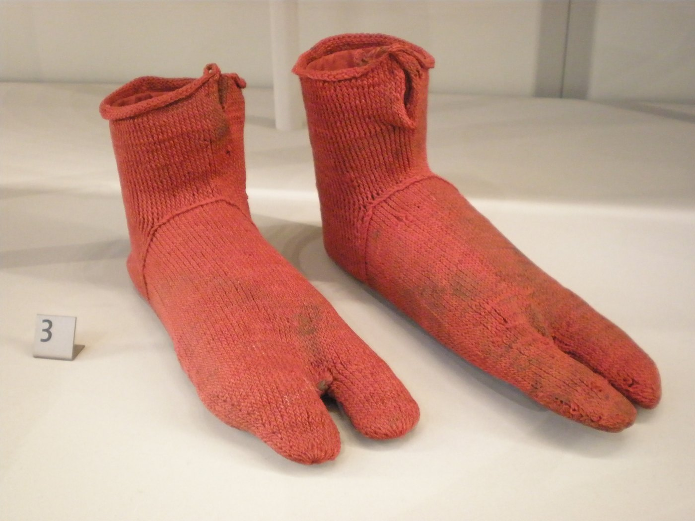
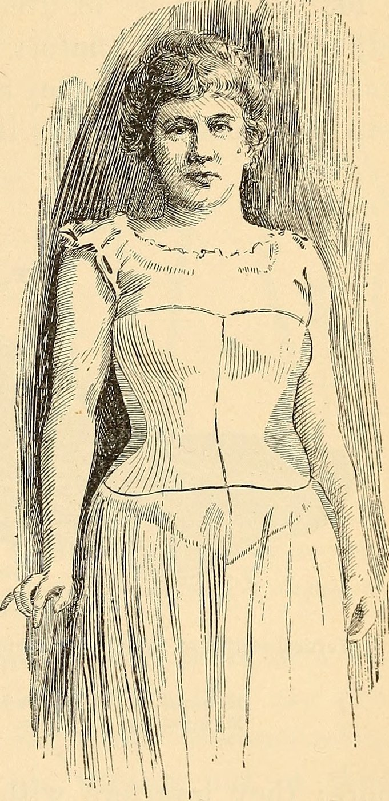
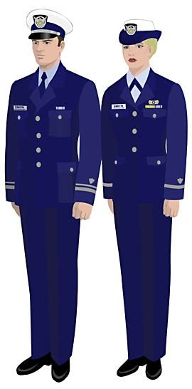
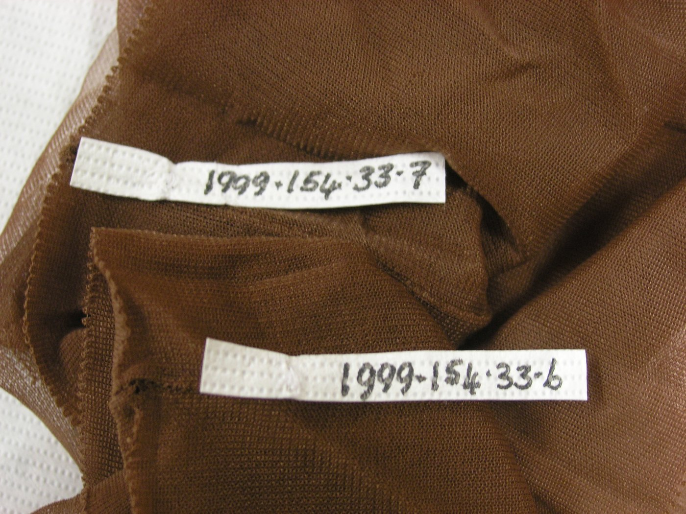

Precision Polymer Elasticity for the Human Kinetic Chain
Elastane Pair engineers high-performance technical hosiery utilizing segmental polyurethane block copolymers double-wrapped around long-staple Australian Merino wool. Knitted on Italian 200-needle circular cylinders with millimetric graduated compression, each pair locks firmly to foot anatomy with zero slippage, zero blister friction, and instant elastic recovery.

Graduated Compression & Filament Gauge Calculator
Simulate vascular venous return acceleration and tensile elastic recovery profiles based on activity protocol and elastane denier selection.
Anatomical Hosiery Engineering
Every pair is constructed with zoned compression panels, reinforced heel pivots, and seamless closures to optimize human locomotion.

Plantar Arch Elastic Band
A high-modulus 360-degree circular compression band cradles the plantar fascia, preventing midfoot torsion and stabilizing the arch across repetitive ground impacts.
Examine Arch Architecture →
Y-Gore Articulated Heel Pocket
Knitted with a deep 3D Y-shaped gore seam that expands anatomically over the calcaneus bone, preventing sock slippage down into footwear during intense movement.
Explore Heel Mechanics →
Seamless Hand-Linked Toe
The traditional abrasive ridge of machine-overcast toe seams is completely eliminated through true Rosso loop-by-loop linking, producing a frictionless, flat toe box.
Study Linking Precision →Textile Performance Benchmarks
Quantitative tensile, elastic recovery, and Martindale abrasion data recorded at our 181 Mercer Street testing facility.
| Performance Parameter | Elastane Pair Composite | Standard Cotton Tube Sock | Standard Synthetic Nylon Sock |
|---|---|---|---|
| Cylinder Needle Density | 200 Needles (Superfine Mesh) | 84 – 108 Needles (Coarse) | 144 Needles (Intermediate) |
| Elastic Strain Recovery (50% Pull) | 98.2% Instantaneous Recovery | 64.5% (Severe Plastic Bagging) | 82.0% (Gradual Elastic Creep) |
| Ankle Compression Gradient | 22 mmHg (Precision Tapered) | 0 mmHg (Zero Compression) | 6 – 8 mmHg (Uniform Tightness) |
| Martindale Abrasion Endurance | > 50,000 Friction Cycles | 12,000 Cycles (Heel Thinning) | 28,000 Cycles (Pilling Breakdown) |
| Moisture Evaporation Rate | 3.8 g/m²·hr (Vapor Micro-Channels) | 0.9 g/m²·hr (Absorptive Saturation) | 2.2 g/m²·hr (Synthetic Film) |